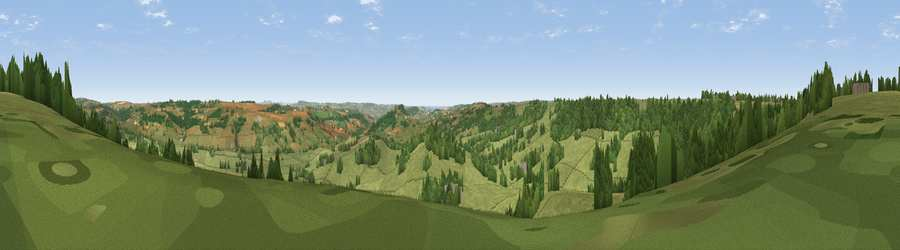

Viewpoint near Yarcombe
#9898 in England · top 21% of its area beats it · near YarcombeWhere it is
The exact computed spot (ST 23275 07125). Click the marker for map links.
The view, rendered

A 360° render of this exact spot computed from the terrain model, tree cover and land cover — summer colours, afternoon light, calibrated against photographs of famous viewpoints. Real trees, hedges and buildings will differ in detail.
The panorama
Grey silhouette: terrain skyline in each direction (720 bearings, Earth curvature and refraction included). Dashed green: skyline with trees (+15 m) and buildings (+8 m) as obstacles. Blue strip: how far the ground is visible on each bearing.
Where the view opens
Wedge length = distance to the farthest visible ground on that bearing (vegetation-aware). Rings at 10, 25 and 50 km.
What fills the view
68% grassland · 23% woodland · 8% cropland ·
Angular shares of the visible panorama (visual magnitude), not map area. Landscape diversity 0.37 (0–1 Shannon).
Key numbers
More beautiful places nearby
The staircase of upgrades: each row has a higher view potential than everything closer. Driving times are estimates from straight-line distance, calibrated against real road routing — check an actual route before setting out.
| Place | Direction | Drive | Score |
|---|---|---|---|
| Viewpoint near Dalwood | SSE · 5 km | ~11 min | 64.0 |
| Viewpoint near Membury | ESE · 5 km | ~11 min | 65.0 |
| Viewpoint near Combe St Nicholas | NE · 8 km | ~16 min | 67.9 |
| Viewpoint near Buckland St. Mary | NNE · 10 km | ~19 min | 73.0 |
| Viewpoint near Buckland St. Mary | NNE · 10 km | ~19 min | 77.3 |
| Lambert's Castle Hill | ESE · 16 km | ~28 min | 78.7 |
| Viewpoint near Lyme Regis | SE · 18 km | ~31 min | 81.3 |
| Viewpoint near Axmouth | SSE · 18 km | ~31 min | 82.4 |
50.85853, -3.09146 · source: screening · position refined by local search. Computed location — check access rights before visiting.